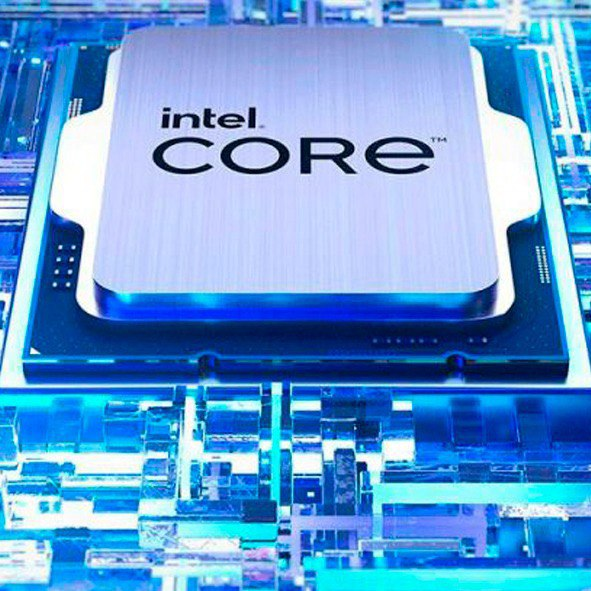
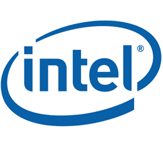

Характеристики процессоров Intel
Предыдущей разработкой компании стали процессоры Intel Core 11 поколения. Именно они обладали показателями, которые позволили
практически уравнять чипы по производительности с известными AMD Ryzen. И если последние выделялись большим количеством ядер, то Intel Core 11 достигал результатов
за счет высоких тактовых частот и скорости выполнения инструкций за один такт. Для любителей игр изделия двух компаний стояли примерно на одном уровне.
Выход нового 12 поколения чипов позволил компании значительно обогнать конкурентов. Прежде всего за счет увеличения количества ядер. Ведь именно по этому параметру
наблюдалось отставание от AMD Ryzen. Кроме удвоения количества ядер, компания порадовала пользователей их гибридным происхождением.
Процессоры Intel 12 поколения лучше рассматривать на примере флагманской версии i9-12900K. Она получила ряд микроархитектурных решений, выведших процессор на
принципиально новый уровень. Среди прочих усовершенствований также стоит обратить внимание на поддержку DDR5 и PCI-E 5.0. Ранее эти параметры памяти были недоступны.
И хотя сегодня более активно используется потенциал DDR4, а критичного отличия в играх применение DDR5 не демонстрирует, производитель ожидает значительных изменений
в потребностях пользователей. Как только усовершенствуются основные процессы, потенциал DDR5 с частотой, достигающей 5200–6400 МГц, будет полностью раскрыт.
Преимущество в виде поддержки PCI-E 5.0 пока остается менее значимым. К настоящему времени графические процессоры и накопители, для которых используется данная версия,
на рынке не представлены. Поэтому поддержка этой версии остается заделом на будущее.
А вот что действительно важно для ценителей игр, это микроархитектурные изменения. Прежде всего, увеличилась производительность каждого ядра. Любому игроку известно,
насколько это повышает качество игрового процесса. Одним из наиболее важных изменений стали новые CPU. Как известно, процессор оснащен ядрами двух типов. Первые,
считающиеся большими, отвечают за производительность.
Малые ядра обеспечивают эффективность. Производительные ядра работают в частотах до 5,2 ГГц. Эффективные же ограничены частотой до 3,9 ГГц.
При этом малые ядра занимают меньше места на кристалле
и не поддерживают обработку парных потоков. Эффективные ядра предназначены для выполнения незначительных задач. Например, контролируют фоновые нагрузки.
Производительные же закрывают все важные и масштабные потоки. Таким образом пользователь получает возможность одновременно выполнять дополнительные задачи
одновременно с игрой. Скорость и производительность при этом не снижаются.
Специальный аппаратный блок Intel Thread Director распределяет нагрузку по ядрам, перенося менее важные потоки на эффективные.
Непосредственно в игре малые ядра используются только для наименее важных задач: вспомогательные вычисления приоритетно будут ложиться на производительные ядра,
обработка звука.
Наличие гибридной микроархитектуры становится наиболее значимым исходя из того, что чистых игровых компьютеров не так много.
А вот большая часть пользовательских ПК используется для множества целей, включая современные игры. Благодаря своим показателям процессоры Intel 12
поколения уверенно конкурируют и превосходят AMD Ryzen 9.
Небольшое преимущество сохраняется у топовых моделей CPU AMD. А если на ПК регулярно выполняются различные ресурсоемкие процессы, это преимущество практически сводится на нет.
Справка! В настоящее время большинство игр работают с 8–12 потоками. Благодаря этому даже владельцы 4-ядерной техники вполне могут наслаждаться качественным игровым процессом. На первое место выходит не количество вычислительных ядер, а именно их производительность. Как раз это и обеспечивается новым процессором Intel 12 поколения. Для современных игроков это означает отсутствие проседаний частоты кадров и других неприятных явлений.
Какой же процессор Intel выбрать именно нам?
